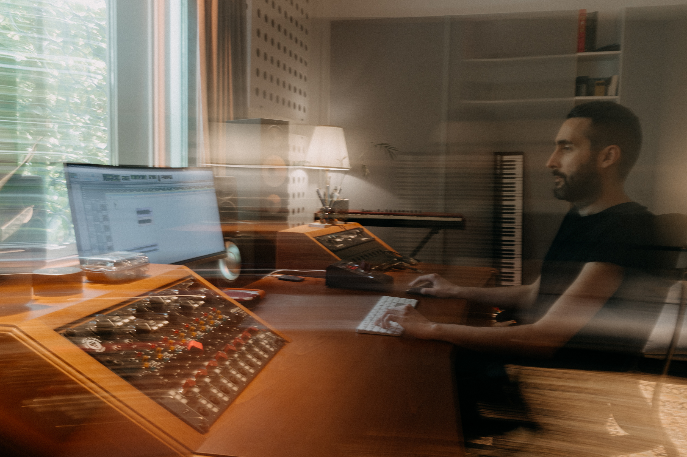
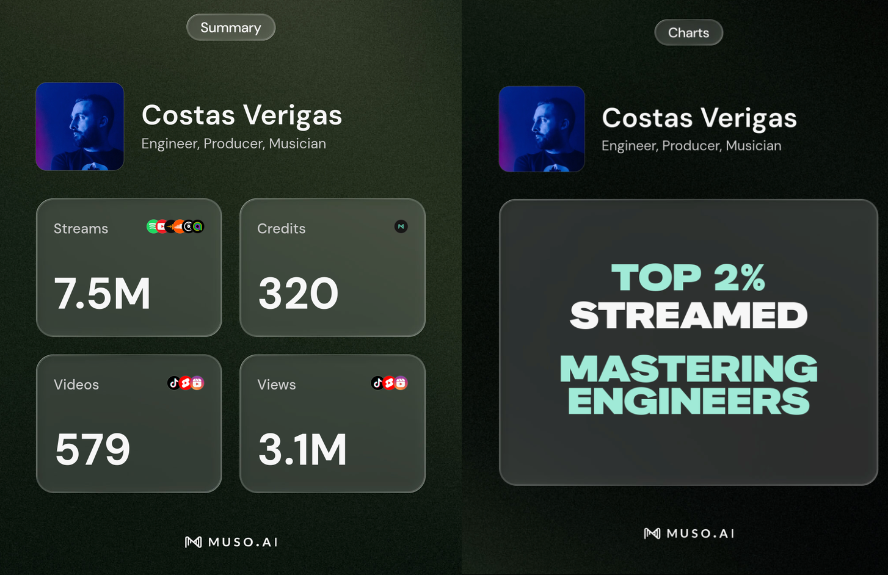

Costas
Verigas
Mixing and mastering engineer based in Athens. Working with artists in the studio and remotely.

Selected work


Listen to the playlist, or choose a release above.
Open in Spotify ↗Playback is provided by Spotify.
Credits & reach
Image updated:
Services
Mixing
Mixing for singles, EPs and albums, working with your recordings and the direction of the project.
Mastering
The final stage for individual tracks and complete releases, with attention to consistency across the record.
Production & recording
Collaboration in the studio, from tracking and arrangement through to the final mix.
About
I'm a mixing and mastering engineer and producer based in Athens, with over 15 years of studio experience across a wide range of genres. I work with artists in the studio and remotely, from recording through to the final master.
Alongside studio work, I bring over 15 years of live sound and FOH engineering experience, including festivals, theatre and international touring productions across Greece and Switzerland.
Genres
Indie, pop, alternative, hip-hop, acoustic & singer-songwriter, rock, metal, electronic, ambient and experimental.
Studio & tools
Logic Pro, Ableton Live, iZotope RX and Reaper.
Apple MacBook M1 Pro, RME Babyface Pro FS, Topping DX5II, Output Barefoot Frontier monitors, HIFIMAN Ananda Nano and Sundara, and Kiwi Altruva headphones.
Live consoles: Midas, Allen & Heath and Yamaha.
Contact
For mixing, mastering and production enquiries.
cv.reflection@gmail.com